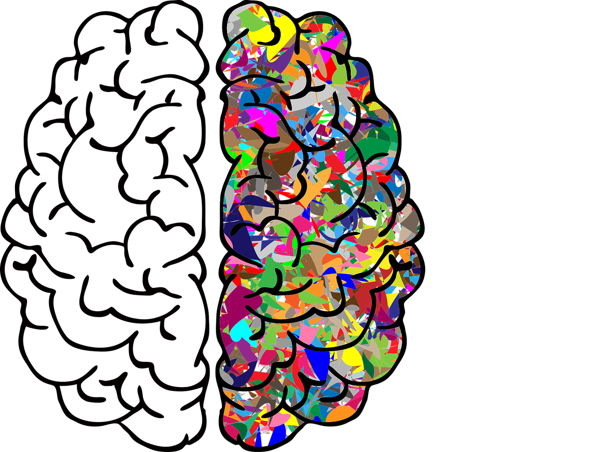

Meine Interesse an Sprachen hat begonnen vor 8 Monaten, aus drei Gründen ich mochte die Sprachen.
-
Ich fing an Anime zu mögen deshalb ich war erstaunt über Japanisch.
-

Ich endeckte die "Sapir-Whorf Hypothesis", es spricht über wie die Sprache du Sprichst prägt Ihr Denken. Ich war sehr überrascht.
-
Am April 2021, fing ich an Deutsch zu lernen und diese Sprache macht mir um zu erkennen, wie erstaunlich Sprachen sind.
Meiner Meinung Nach Sprachen bekommen nicht die Aufmerksamkeit, die sie verdienen. Ich finde sehr schön wie man kann mit verschiedenen Sprachen sich ausdrücken. Sprachen zu lernen ist eine Herausforderung für Ihr Gehirn dass die positive Ergebnisse bringen. Man Kann auch eine andere Kultur und die Menschen des Landes besser kennen; ich denke das ist wunderbar.
Ich ermutige dir, eine neue Sprache zu lernen! Du wirst es nicht bereuen. Es gibt viele Möglichkeiten zu lernen. Meine Lerntechnik ist die häufigsten Substantive, Verben, Adjektive und Adverbien zu lernen (Es ist auch sehr wichtig Präpositionen und Konnektoren zu lernen). Zur selben Zeit Lerne die grundlegende Grammatikstruktur der Sprache.
Ich empfehle zu lernen:
-
300 Substantive
-
50 Adjektive
-
50 Adverbien
-
100 Verben
Finde einen fließend sprechenden Sprecher der Sprache zu üben! Der beste weg zu verbessern ist zu sprechen, schreiben und lesen.
Und lerne immer die Grammatikstruktur und die Regeln der Sprache, bis du fließend beherrschen bist!